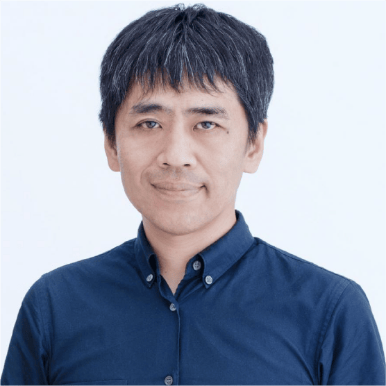

Nosotros
SANAA es un estudio de arquitectura liderado por Kazuyo Sejima y Ryue Nishizawa (Sejima And Nishizawa And Associates).
Arquitecta
Kazuyo Sejima

Arquitecto
Ryue Nishizawa
Misión
Practicamos una arquitectura que queremos que a la gente le guste verdaderamente utilizar.
Usar el color blanco para realzar la iluminación.
Distribuir homogéneamente la luz natural del día.
Evitar jerarquías para permitir la libre circulación.
Abrir el espacio para crear continuidad interior-exterior.
Reunir creando un sentimiento de comunidad.
Proyectos
Estos son algunos de los proyectos construidos más importantes que hemos diseñado.
| Ubicación | Proyectos Construidos | Tipología | Observación |
|---|---|---|---|
| Japón |
|
|
*Primer premio en competición. |
| Países Bajos |
|
|
- |
| Italia |
|
|
*Primer premio en competición. |
| EE.UU. |
|
|
*Primer premio en competición**Premio Mies Crown Hall Americas Prize 2014/2015 |
| Alemania |
|
|
- |
| Suiza |
|
|
*Primer premio en competición. |
| Reino Unido |
|
|
- |
| Francia |
|
|
*Primer premio en competición. |
Logros
Algunos de nuestros más recientes premios y reconocimientos obtenidos a lo largo de nuestra labor como arquitectos.
2004
León de Oro de la Novena Bienal de Venecia
2006
Premio del Instituto de Arquitectura de Japón
2007
Premio Kunstpreis Berlín
2010
Premio Pritzker de Arquitectura
2016